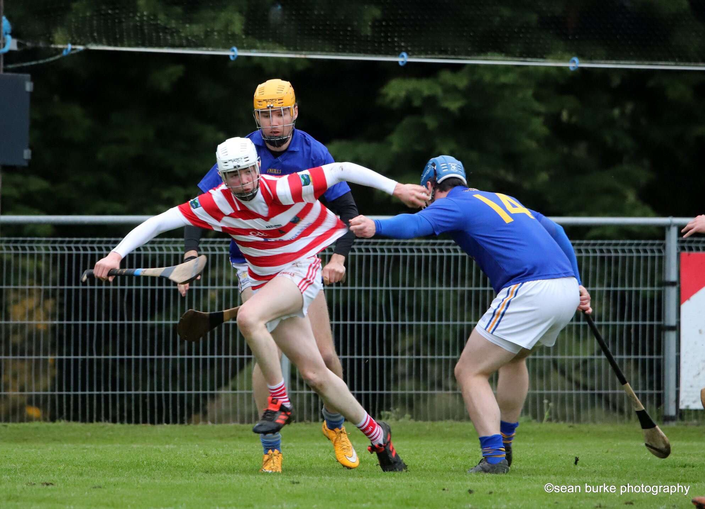
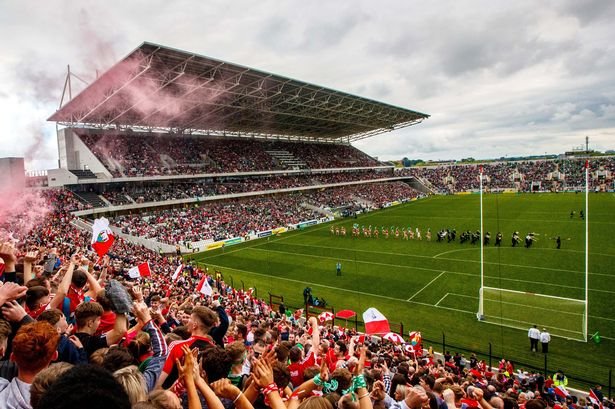
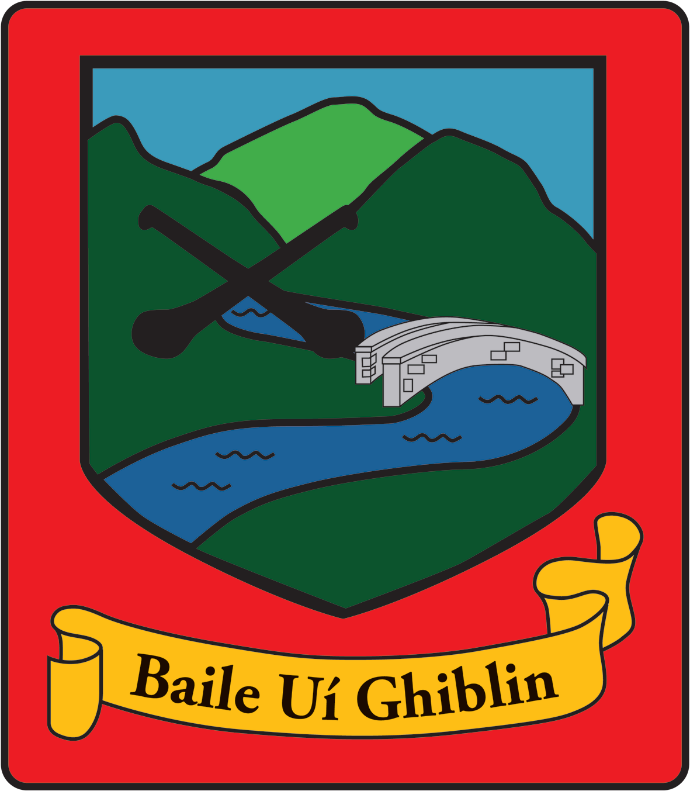

- 
- 

- 
Sports play a huge role in my life from playing to watching and attending games. My favourite sport would have to be hurling.Below I have included photos of my club crest and of me playing hurling.There is also a photo of Pairc Ui Chaoimh, where i have spent many a day during summer following the Cork hurling team.I am also an avid football fan, my favourite team being Manchester United.
Travelling has always been part of my life and I believe it is very important to see the world and to get out of your comfort zone. My most recent holiday was to the croatian city of Zagreb, it was a very interesting city with very nice people.My favourite holiday was to New York because of the sights and the buzz of the big city.As an example of more local travel, a favourite place of mine would be Schull in Co.Cork. A lovely picturesque town on the wild atlantic way, I have spent many a summer there.